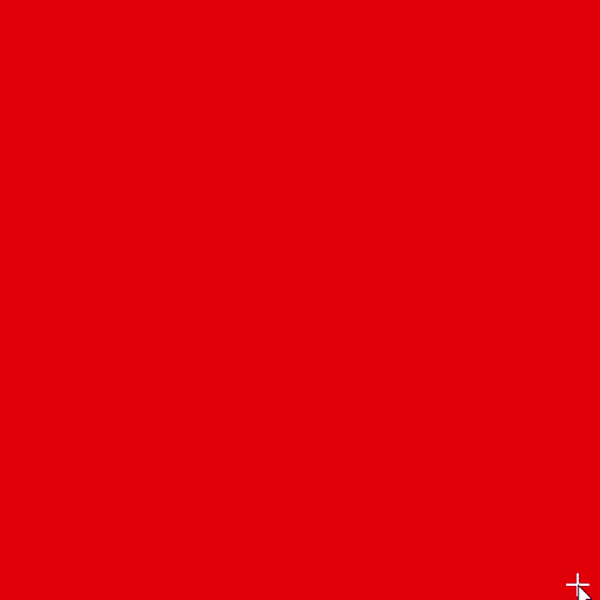
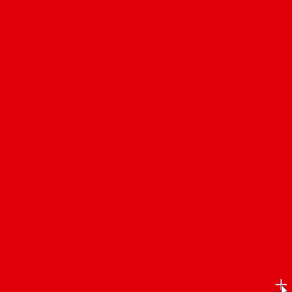

GLSL Shader
2022
I started my artistic journey with traditional canvas painting. Curiosity led me to experiment with translating that experience with code. Learning GLSL shaders opened up a new world for me, where I could "paint" with code and manipulate pixels directly. This project explores the visual possibilities of light, texture, and movement in ways traditional mediums can't, adding a dynamic, interactive layer to my work that constantly evolves with each frame.

 



×